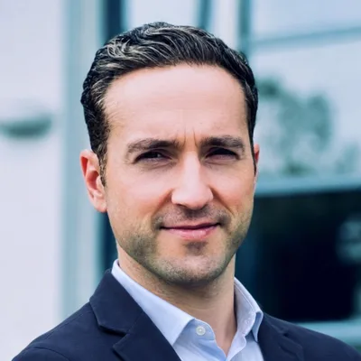
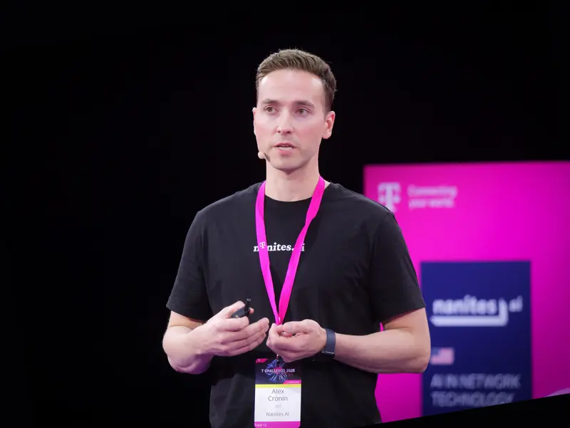
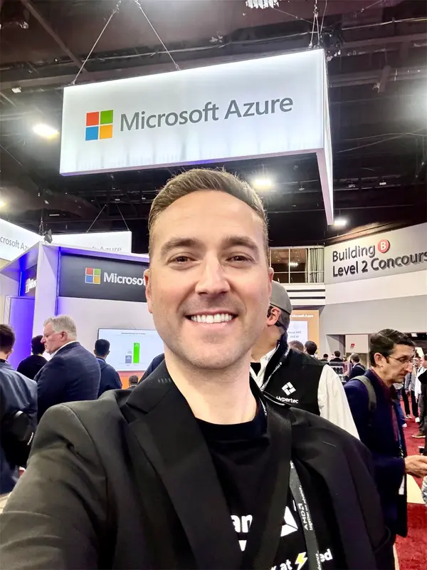
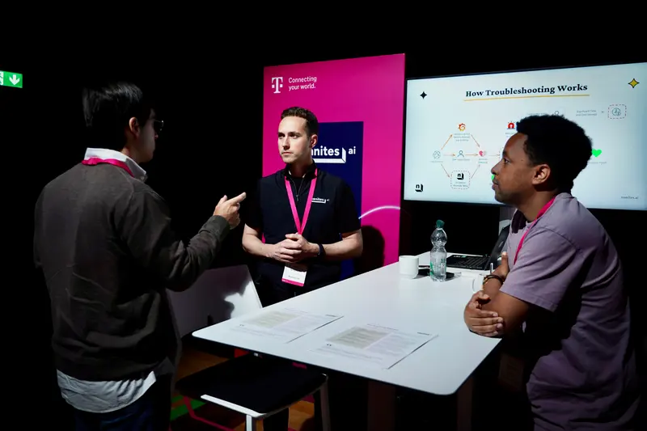
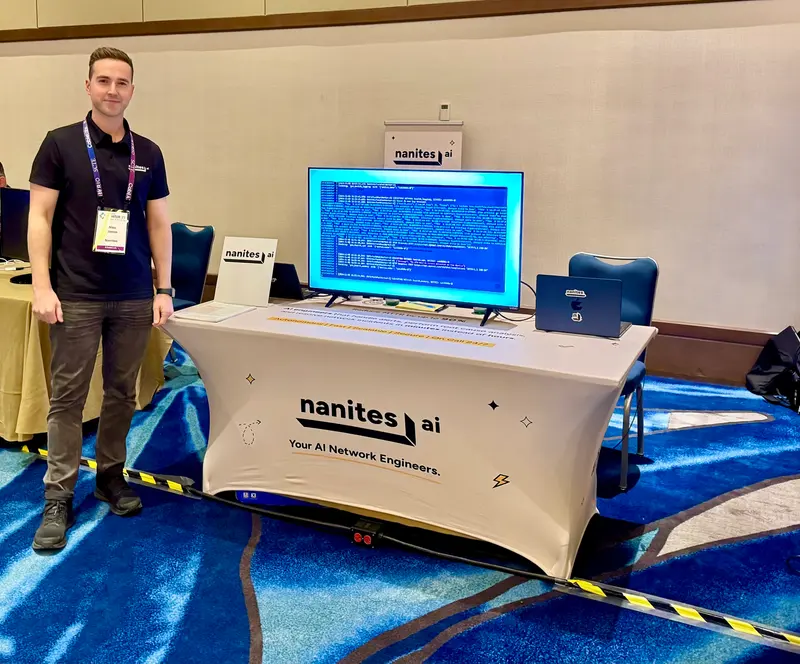
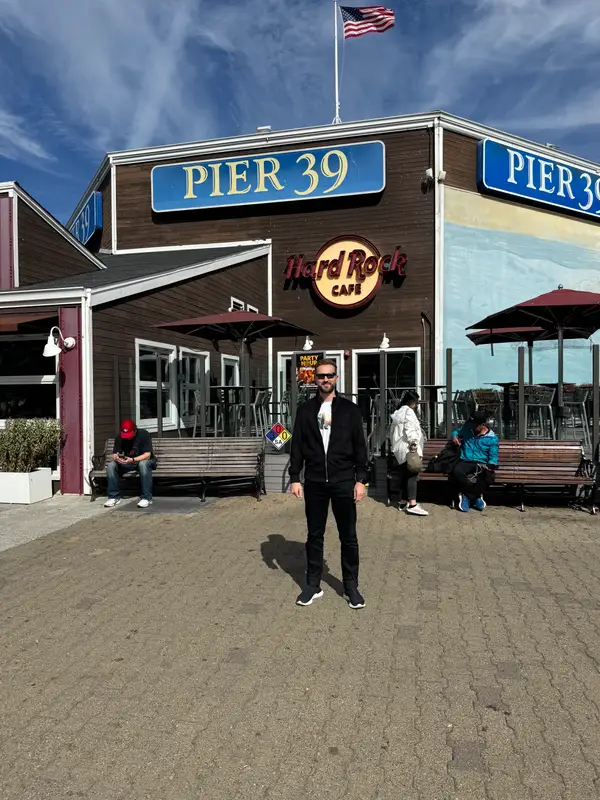
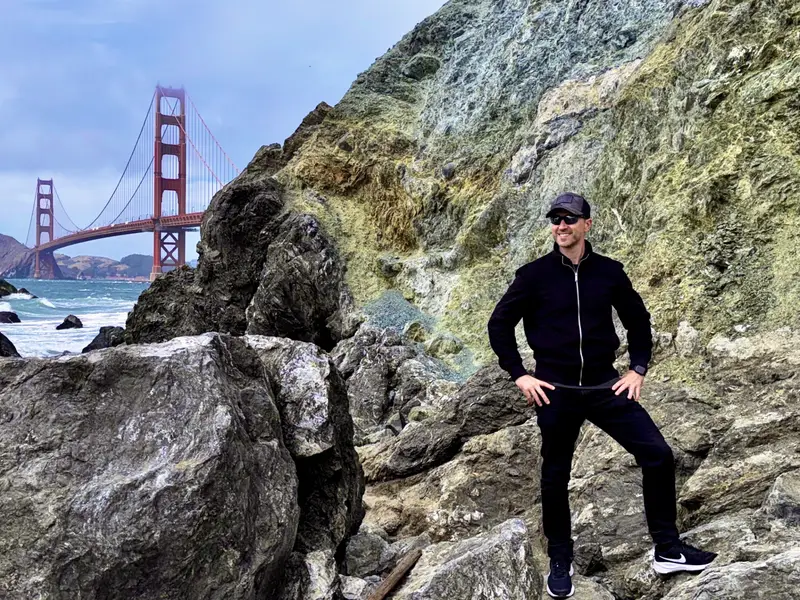

Technologist and entrepreneur.
I like taking complex systems apart, understanding how they work and building new ones. I approach problems from first principles and do the least engineering needed to make something simple and reliable.
I've always been drawn to deep tech, from silicon and computer engineering to software, networking and AI, and just as much to how business works: sales, hard problems, markets and how capital moves. I run Hardware Nation, which I started in 2006, and I spent two years building Nanites AI.

Hardware Nation · since 2006
What 20 years of Hardware Nation taught me
From sourcing IT equipment to a digital-first distributor that works directly with the manufacturers.
Read the story
Nanites AI
What two years of building an AI network engineer taught me
The first version worked in a demo. Making it reliable enough to trust took the next two years.
Read the storyAbout
I came to the United States from Russia in 1991, when I was nine, and grew up in Atlanta. My father ran a travel agency, a local Russian newspaper and a service that helped Russians renew their passports. As a teenager I traveled around Atlanta translating between Russian and English, a constant need before AI, and helped with the newspaper however I could.
His marketing was brick and mortar: the newspaper and word of mouth. I was sure going digital would help. He didn't want to, so I built it myself, on my own time and money. The phones started ringing, even with people he hadn't heard from in a decade. It was my first lesson in what digital distribution can do.
I've sold door to door, on eBay and from office building to office building. After Georgia Tech I started Hardware Nation, and over 20 years I've built relationships with hundreds of manufacturers, ODMs, distributors, software companies, customers and investors, hired hundreds of engineers of every kind, from software to electrical, and led projects big and small.
Timeline
Came to the United States from Russia at nine and grew up in Atlanta.
Started working at 11: translating, helping with my father's businesses and selling on eBay. Later took his businesses online.
Started Hardware Nation at 24, after Georgia Tech.
Launched hardwarenation.com, which I built myself: hundreds of thousands of products online, backed by warehouses across the country. More than 1,000 customers to date, including Lockheed Martin, Accenture, Stanford University and Zoox.
Moved into open networking, working directly with ODMs in Taiwan.
Relaunched and rebuilt the business online several times, and narrowed our focus to data center and open networking.
Expanded into design, integration and deployment, including SONiC in enterprise production networks.
Started Nanites AI.
T Challenge finalist in Bonn. Visited ODMs and manufacturers in Taiwan.
Leading Hardware Nation's shift to AI-driven distribution, built on workflows and multi-agent systems.
Speaking and events
I've presented Nanites at Deutsche Telekom's headquarters in Bonn, at CableLabs events and at Network X Americas. I also take part in OCP, ONUG and NANOG, and I'm often on the floor at industry trade shows.



Writing
I write about AI for networks and open networking.
- Engineering an Agentic Network Operations PlatformPaper (preprint, PDF) · September 2026
- Harness Engineering for Agentic Network OperationsNanites AI · August 2026
- AI Agents for Production NetworksNanites AI · July 2026
- Where Cumulus Linux Fits in Today's Data CentersHardware Nation · November 2026
- SONiC Continues to Expand Its Role in AI NetworkingHardware Nation · October 2026
All articles: Hardware Nation and the Nanites AI blog.
Outside work
Father. Runner. I read a lot, mostly about business and technology. I'm fascinated by space, physics (quantum mechanics most of all) and aviation, and I follow geopolitics and economics.
Some of what I've been reading: The Algorithm by Jon McNeill, Zero to One by Peter Thiel, How to Win Friends and Influence People by Dale Carnegie, The Thinking Machine by Stephen Witt, Titan by Ron Chernow and Fall in Love with the Problem, Not the Solution by Uri Levine.

